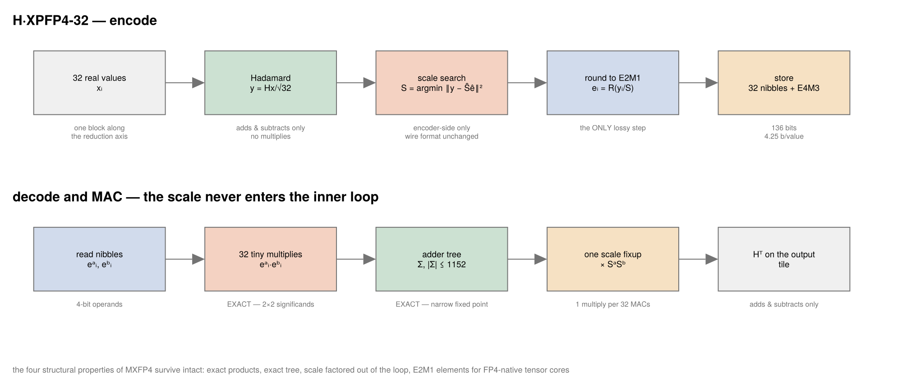
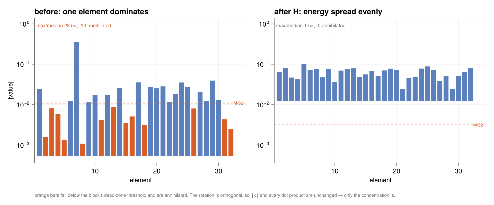
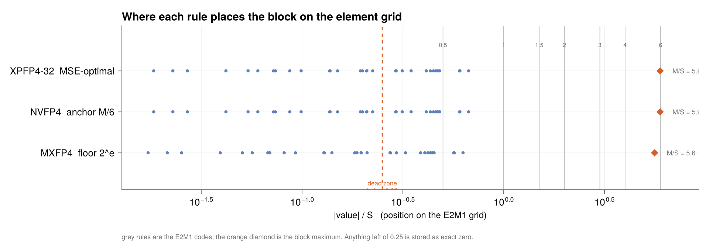
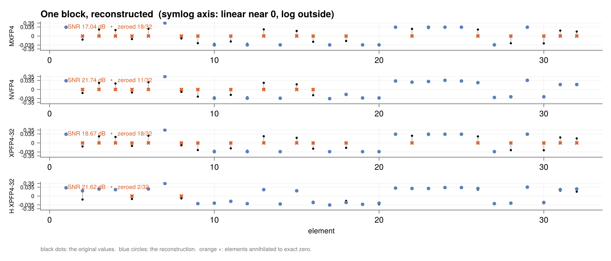

H·XPFP4-32 in detail
H·XPFP4_32 is three ingredients composed, each doing exactly one job:
| ingredient | what it is | what it costs | what it buys |
|---|---|---|---|
| H | orthonormal Hadamard rotation of each 32-block | adds and subtracts only | destroys outlier concentration |
| K=32, E4M3 scale | the finer scale format over twice NVFP4's block | one small multiply per 32 MACs | NVFP4's placement accuracy at MXFP4's 4.25 b/value |
| MSE-optimal | scale chosen by search, not by anchoring the max | encoder-side only | ~1 dB, wire format untouched |
The pipeline
plot_xpfp4_pipeline()
Every one of MXFP4's four structural properties survives: products stay exact, the adder tree stays exact, the scale still factors out of the inner loop, and the elements stay E2M1 so FP4-native tensor cores multiply them directly. Only the scale changed.
Ingredient 1 — why rotate
A block-scaled format shares one scale across K elements, so a single large value captures that scale and pushes the dead-zone threshold up underneath its neighbours. That is the format's defining weakness, and it is a property of concentration, not of magnitude.
An orthonormal rotation fixes concentration without touching anything else. Take 32 weights from $\mathcal{N}(0, 0.02^2)$ with one outlier at 0.35:
plot_rotation_effect(x)
The max/median ratio falls from 28.5× to 1.5×, and the count of elements below the dead-zone threshold falls from 13 to 0.
xpuFP.plot_rotation_effect — Function
plot_rotation_effect(x; K=32, size=(960,400)) -> FigureWhat the Hadamard rotation does to a block: before and after, on a log magnitude axis, with each scheme's dead-zone threshold drawn in.
An outlier captures the shared scale, which pushes the threshold up and annihilates its neighbours. Rotating spreads that one large value across all K coordinates, so no single element dominates and almost nothing falls into the dead zone.
$H$ is orthogonal, so $\|Hx\| = \|x\|$ and $(Hx)\cdot(Hy) = x \cdot y$ — every dot product is preserved exactly. A GEMM can therefore rotate both operands, compute, and rotate the output tile back, with the same answer. What changes is only how the energy is distributed across coordinates, which is the one thing block scaling is sensitive to.
It costs no multiplies: a Hadamard transform is adds and subtracts, $K\log K$ of them.
Ingredient 2 — K=32 with an E4M3 scale
NVFP4 gets its accuracy from a mantissa-bearing scale (E4M3) that can place the block maximum within ~6% of the top code, where MXFP4's E8M0 can only land it somewhere in a whole binade. But NVFP4 spends that scale over 16 elements, costing 0.5 bits/value.
Spending the same scale over 32 elements costs 0.25 bits/value — MXFP4's overhead — and halves the rate at which the scale multiply is applied. The accuracy loss from the longer block is smaller than the gain from the finer scale.
Ingredient 3 — MSE-optimal placement
Anchoring the block maximum at the top code is a no-overflow heuristic, not the error minimiser. Deliberately overloading a little — accepting a small clip on the largest element — buys finer resolution for the other 31.
plot_scale_placement(x)
xpuFP.plot_scale_placement — Function
plot_scale_placement(x; size=(960,340)) -> FigureWhere each scale rule lands the block on the E2M1 grid.
MXFP4's floor rule can only put the maximum somewhere in the top binade; NVFP4 anchors it at the top code; XPFP4_32's MSE-optimal search deliberately overloads a little, accepting a small clip on the largest element in exchange for finer resolution on all the others — which is where its extra decibel comes from.
The search is bounded at one octave below the anchor, so the clip on the maximum never exceeds 2×, and it happens entirely inside the encoder — wire format, decoder and MAC path are untouched.
Worked example: one block, four schemes
plot_block_reconstruction((MXFP4, NVFP4, XPFP4_32, rotated(XPFP4_32)), x)
xpuFP.plot_block_reconstruction — Function
plot_block_reconstruction(fmts, x; size=(980,420)) -> FigureOne block reconstructed by several schemes, element by element, with the error drawn as a whisker and annihilated elements marked.
This is the picture SNR summarises and, on spread data, misleads about: a scheme can post a good SNR while a third of its coordinates have been replaced by exact zero.
On this block:
| scheme | SNR | zeroed | cosine similarity |
|---|---|---|---|
MXFP4 | 17.04 dB | 18 / 32 | 0.99326 |
NVFP4 | 21.74 dB | 11 / 32 | 0.99671 |
XPFP4_32 | 18.67 dB | 18 / 32 | 0.99326 |
H·XPFP4_32 | 21.62 dB | 0 / 32 | 0.99733 |
Note that NVFP4 posts a marginally higher SNR than H·XPFP4_32 here while destroying 11 coordinates outright. That is the energy-weighting trap: the outlier carries most of the block's energy, so representing it well dominates the SNR, and the 11 annihilated neighbours are nearly invisible to the metric.
Worked example: a dot product
julia> using xpuFP, Random, LinearAlgebra
julia> rng = MersenneTwister(11);
julia> a = 0.02 .* randn(rng, 32); a[7] = 0.35;
julia> b = 0.02 .* randn(rng, 32);
julia> truth = dot(a, b);
julia> r_mx = block_dot(MXFP4, a, b);
julia> r_xp = block_dot(XPFP4_32, a, b);
julia> r_mx.products_exact && r_xp.products_exact # the arithmetic is exact either way
trueAll the error is representational — the multiplies and the adder tree contribute nothing, which is what products_exact asserts. The scale enters once per block, as $y = S_a S_b \sum_i e^a_i e^b_i$.
Worked example: measured across distributions
plot_block_schemes(ds; rotate = true)
| scheme | b/val | gaussian | t₃ | outlier | zeroed (outlier) |
|---|---|---|---|---|---|
H·XPFP4_32 | 4.25 | 20.76 | 20.83 | 21.47 | 1.2 % |
NVFP4 (shipped) | 4.50 | 20.43 | 20.83 | 20.95 | 21.0 % |
MXFP4 (shipped) | 4.25 | 18.78 | 16.92 | 14.88 | 38.5 % |
Better than shipped NVFP4 on all three distributions, at fewer bits, with a 17× lower annihilation rate.
When not to use it
- If the scale must be an exponent add.
H·XPFP4_32needs a small multiply per block. If that is unacceptable,H·MXFP4_BEST32keeps E8M0 and still reaches 19.05 / 19.23 / 19.80 dB with under 2% annihilation. - If blocks cannot be rotated. The rotation must be applied to both GEMM operands along the shared reduction axis, and the output tile rotated back. Where an operand is consumed by something other than a GEMM, that bookkeeping may not be worth it.
- If the block length is not a power of two. Hadamard requires it;
rotatedthrows otherwise.